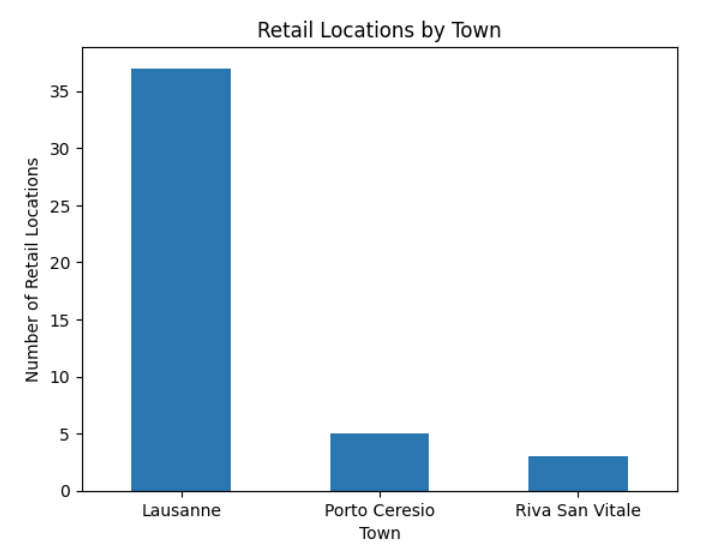
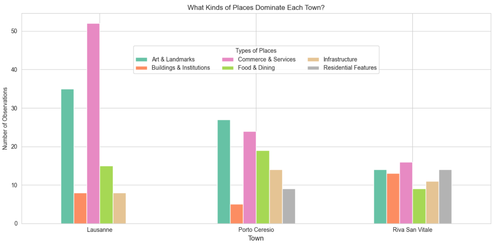
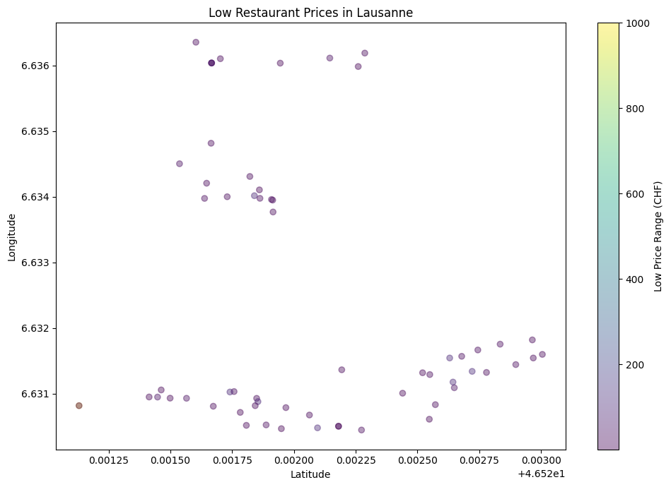
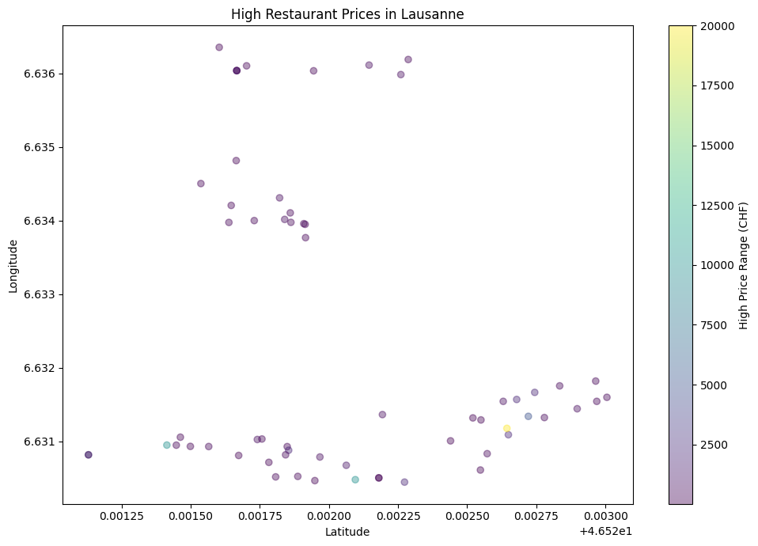

This project explores how cultural, commercial, and infrastructural spaces are distributed across the towns.
The map below shows where different activities and places are located.
The grouped comparison highlights the overaching identity of each location. While Lausanne and Porto Ceresio are heavily driven by economic and cultural markers, Riva San Vitale presents a more infrastructure-focused image.
This chart shows how many retail locations exist in each town, highlighting differences in commercial activity.

This graph is very simple, but it gives us a quick visual comparison of retail presence across the three towns. This is important for people who are interested in the economic and commercial vibrancy of each town. This information can help residents choose where to live and visitors where to go for shopping. It captures the essence of the landscape of the towns and the livelieness of the area.
According to the graph there are 45 retail locations accross the 3 towns. Lausanne has the most retail locations at 37. Following in second is Porto Ceresio with 5. Lastly, Riva San Vitale has 3 retail locations.
There is a stark contrast between Lausanne and the other two towns. This is because Lausanne is a larger city with more commercial activity, while Riva San Vitale and Porto Ceresio are smaller towns with less retail presence.
This chart shows which types of locations were prominent in each town dependent on the number of observations collected, highlighting the towns' characters.

By breaking all 18 data types into 6 specific sub-categories, we see the localized differences. Lausanne dominates in Commerce & Services, Porto Ceresio leads in Art & Landmarks, and Riva San Vitale stands out for both of those categories in addition to Residential features.
These scatterplots show the differences of the low prices of restaurants in Lausanne versus the high prices of the same restaurants in the area. Although the top of the town is very similar in price range, the bottom part of the town seems to have some spikes in prices highlighting a difference in economic flow from the right side versus the left side of the city.

